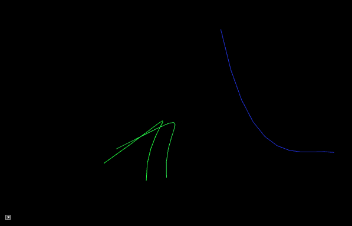

Assignment 2: Howl’s moving casteljau
In which, we implement animations based on interpolation
Due Friday, September 24th, before midnight
The goals of this lab are to
-
implement animations using linear interpolation
-
implement animations using cubic interpolation
Get the source
On Github, do a Fetch Upstream to synchronize your forked repository with the class repository.
Then update the source on your local machine and rebuild.
> git pull
> cd build
> cmake ..; make1. Gradient
A color gradient uses linear interpolation to gradually change from one color to another based on position.
For this question, modify the code in a2-interpolation/gradient.cpp to implement a 2D gradient. Your program should open a square window and draw NxN cubes to fill it. The color of each cube will be a function of four colors and the cube’s position. The four colors will correspond to the four corners of the screen: NE, SE, SW, NW.
To run your program from the /build directory, type
build> ../bin/a2-gradient
build-windows> ../bin/Debug/a2-gradientLet’s suppose that
-
The northwest corner has color yellow (1,1,0). Let’s name this color \(C^{nw}\).
-
The northeast corner has color cyan (0,1,1). Let’s name this color \(C^{ne}\).
-
The southwest corner has color red (1,0,0). Let’s name this color \(C^{sw}\)
-
The southeast corner has color fuchsia (1,0,1). Let’s name this color \(C^{se}\).
A 2D gradient is computed in two steps. Suppose our cube is at position \((p_x, p_y)^T\). First, we interpolate from west to east. Let \(t^x \in [0,1\)] be computed based on \(p_x\) and the window’s width.
Second, interpolate \(C_0^x\) and \(C_1^x\) based on the y direction. Let \(t^y \in [0,1\)] be computed based on \(p_y\) and the window’s height.
The final result is below
2. Draw Cubic
In the file a2-interpolation/drawcurve.cpp, implement an application that draws a cubic curve (and its control points) using both Bernstein polynomials and De Casteljau’s algorithm.
This application should hard-code the following control points:
-
(100, 50 , 0)
-
(150, 200 , 0)
-
(250, 100 , 0)
-
(300, 300 , 0)
When the user presses the '1' key, you should draw the curve by sampling the Bezier curve polynomial, e.g.
When the user presses the '2' key, you should draw the same curve using de Casteljau’s algorithm. The two curves should look visually identical.
You may implement your application however you wish!
To run your program from the /build directory, type
build> ../bin/a2-drawcubic

3. Cubic motion
Implement a demo, a2-interpolation/particlecubic.cpp, that animates the position of a particle based on a cubic polynomial.
To run your program from the /build directory, type
build> ../bin/a2-particlecubicRequirements:
-
The particle should take 5 seconds to travel the curve.
-
The particle should wrap to the beginning of the curve when it gets to the end. You can use any algorithm you want for this, but the simplest solution involves using the elapsed time and fmod.
4. Screensaver
In class, we talked about how we can animate a curve by animating the control points. In this demo, we will compute a series of random curves and use linear interpolation between the control points to blend from one curve to the next.
To run your program from the /build directory, type
build> ../bin/a2-screensaverWe recommend you implement the demo in two steps.
4.1. Single curve
We will interpolate between curves having random control points. You will need to manage three curves.
-
the starting curve (e.g. curve1),
-
the ending curve (e.g. curve2), and
-
a curve that stores the current interpolation between them. Let’s call this curve 'current'
When the current curve reaches curve 2, we compute a new curve to interpolate towards. The algorithm looks like
if t > 1
t = 0
curve1 = current
curve2 = new random curve
current = interpolate between curve1 and curve2 based on t
Requirements:
-
You should randomize colors
-
The animation should run forever (don’t hardcode the number of curves)
-
All control points should be within the bounds of the window
-
Draw curve1, curve2, and current
4.2. Trail effect
To implement a trailing effect, save the previously interpolated curves in a list. So we don’t run out of memory, we store at most N previous curves. In the demo below, N is 50.
In the simplest trail implementation, we would add a new curve to our list every frame. In other words, whenever we update the current curve, we would also add it to our list. However, this creates a trail that has the lines close together. You should try this first.
To make a prettier effect, we should only save the current curve only after T seconds have passed. In the demo below, X is 0.1 seconds. The algorithm looks like
timer = 0
add current curve to a list
if trail size > max size
remove oldest curve from listRequirements:
-
You should randomize colors
-
The animation should run forever (don’t hardcode the number of curves)
-
All control points should be within the bounds of the window
-
Space out saving the current curve by T seconds. T > 0
-
Store at most N curves in your trail. N > 5
5. Be Unique!
Create a unique animation of your own choosing. Below are some ideas:
-
Derive and implement a degree-N curve, N > 3
-
Derive and implement different polynomials for interpolation, such as the ones here. Or create your own.
-
Implement a cool scene using curves, Create a scene with lots of curves or that integrate some interactivity from the user. Some ideas:
-
Play with colors (gradients, palettes, jitter). Use a cubic curve to animate color.
-
Use sine/cosine to animate the control points
-
Let the user specify control points with mouse click
-
Animate the positions, colors, and scale of different shapes using cubic curves
-
-
Animate one or more shapes using different interpolation curves.
Be sure to describe your unique demo in your README.
6. Hand-in your work
6.1. What to hand-in
-
Your code
-
Images, movies, gifs, as appropriate
-
Your readme
6.2. How to hand-in
Check-in your code, images, and writeup and push the changes to Github. If everything is uploaded correctly, you will see your work on Github.
> cd animation-toolkit
> git add <files>
> git commit -m "helpful message"
> git pushBest practice is to always commit changes as you work, rather than waiting until the end to commit changes. You can always revert to an old version if you need to!
Your code should download and compile without modifications. Test your assignment on a lab machine (Park 230) to ensure that it works.
6.3. Generating images, movies and gifs
Screenshots
On Ubuntu, you can take a screenshot by
-
Prt Scrn to take a screenshot of the desktop.
-
Alt + Prt Scrn to take a screenshot of a window.
Gifs
On Ubuntu, you can use Peek to create gifs.
Movies
On Ubuntu, you can use recordmydesktop to record movies in .ogv format.
By default, the whole desktop is recorded unless you give it a window id.
To get the window id, call xwininfo and click on the window. Then pass the
id to recordmydesktop.
> recordmydesktop --windowid <WindowId> --no-sound --v_quality 30 -o <name>.ogvTo check the video, open it in firefox.
> firefox <name>.ogv| Files larger than 100 MB cannot be checked into git. In general, videos should be less than 5 MB. |
6.4. Update your Readme.md
Update assignments/a2-interpolation/Readme.md to document the features in your assignment. Your readme should contain your images, gifs, and movies.
On github, you can drag and drop movies into your readme files. Images and gifs can also be added that way, or by including text such as the following
This Guide can help you with writing markdown.